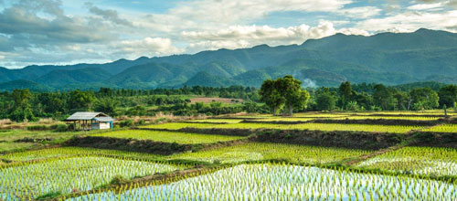

<!-- We don't need full layout here, because this page will be parsed with Ajax-->
<!-- Top Navbar-->
<div class="navbar">
  <div class="navbar-inner">
    <div class="left">
            <!-- Right link contains only icon - additional "icon-only" class-->
            <a href="#" class="link icon-only back show-menu"><i class="icon iconfont">&#xe615;</i></a>
          </div>
          <div class="center sliding">生态农业</div>
  </div>
</div>
<div class="pages">
  <!-- Page, data-page contains page name-->
  <div data-page="menu8-2" class="page white-background">
    <div class="menur-box">
      <div class="menur-box-img"></div>
      <div class="menur-box-txt">
        <h2>生态农业</h2>
        <p>按照生态学原理和生态经济规律，根据土地形态为用户制定适宜土地的设计、组装、调整和管理方案。 </p>
      </div>
    </div>
  </div>
</div>